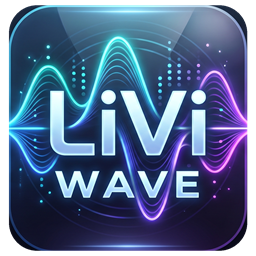

LiVi Wave
Free, open-source audio workstation for Windows. Version 0.14.0 (pre-alpha)
Record, edit and mix audio on your own computer. LiVi Wave is a digital audio workstation (DAW) written in pure Rust, with an Edit window for arranging and a Mix window for balancing, and the workflow audio engineers already know. No account, no subscription, and no internet connection needed to work.
What it does
- Editing: Shuffle, Slip, Spot and Grid modes, Smart, Trim and Grabber tools, fades and crossfades, playlists with comping lanes, clip gain, and undo for everything.
- Mixing: ten inserts and ten sends per track, busses, aux inputs, VCAs, solo modes, meters, and automatic plugin delay compensation.
- Automation: volume, pan, mute, sends and every plugin parameter, written live in Write, Touch and Latch.
- Plugins: EQ, compressors, reverbs, delays, a synth, a drum synth and a sampler are built in. CLAP plugins load too.
- MIDI and notation: a piano-roll editor, step input, quantize, Standard MIDI Files, a Score Editor and MusicXML export.
- Video and surround: a picture track that follows the playhead, and surround and immersive mixing up to 9.1.6 and Ambisonics.
- Bounce: mix or stems to WAV, AIFF or FLAC with dither, reporting peak, true peak and loudness (LUFS).
- Scriptable: every action can be run from the command line with
liviwave-cli.
This is an early pre-alpha release. Expect rough edges, and keep backups of sessions you care about.
Download
For Windows 10 or 11, 64-bit.
Installer (recommended)
An MSI installer. By default it installs for your account; the first page offers installation for everyone on the computer.
Portable
No installation: unzip it and run liviwave.exe. The zip also holds liviwave-cli.exe for the command line. Download each new version from this page.
Not code-signed yet. Windows SmartScreen will show "Windows protected your PC" the first time you run these files. That is expected for unsigned programs. Check the checksum below, then choose More info, then Run anyway.
How to install
With the installer
- Download the MSI and check its checksum (below).
- Double-click it. If SmartScreen appears, choose More info, then Run anyway.
- Follow the wizard, then start LiVi Wave from the Start menu. The built-in demo song is a good first session to open.
To remove it: Settings ▸ Apps ▸ Installed apps ▸ LiVi Wave ▸ Uninstall. Your sessions are kept.
With the portable version
- Unzip it into a folder you own, such as
C:\Tools\LiVi Wave. - Run
liviwave.exe. If SmartScreen appears, choose More info, then Run anyway.
Your data
Your sessions and audio are saved on your computer, where you choose. LiVi Wave does not need an account.
Check your download
In PowerShell, in the folder you downloaded to:
Get-FileHash .\liviwave-0.14.0-windows-x64.msi -Algorithm SHA256
The result must match the SHA-256 below. If it doesn't, delete the file and download it again.
| File | SHA-256 |
|---|---|
| liviwave-0.14.0-windows-x64.msi | 9dcaafa280155fa1f8d3eb9f8be1216efdcc5050923e7920f7c5276536f5f7e0 |
| liviwave-0.14.0-windows-x64-portable.zip | 0690f77be6b71171ed785ea6585c487cf37074bbbede1bdf5523b5cc0f498122 |
Source, licence and help
- Source code and releases: github.com/sarayunova/liviwave
- Report a problem: GitHub issues, or email contact@liviverse.com
- Licence: MIT or Apache-2.0, at your option.
- Not in this release: Windows x86 and Arm builds, macOS and Linux packages.